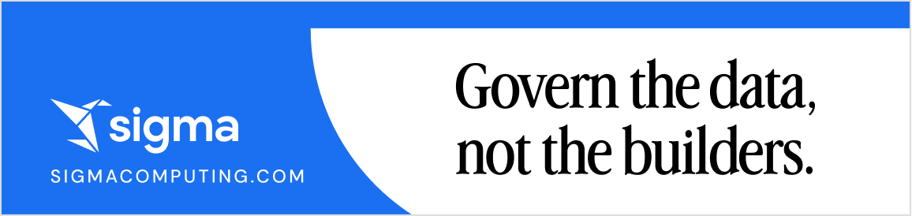
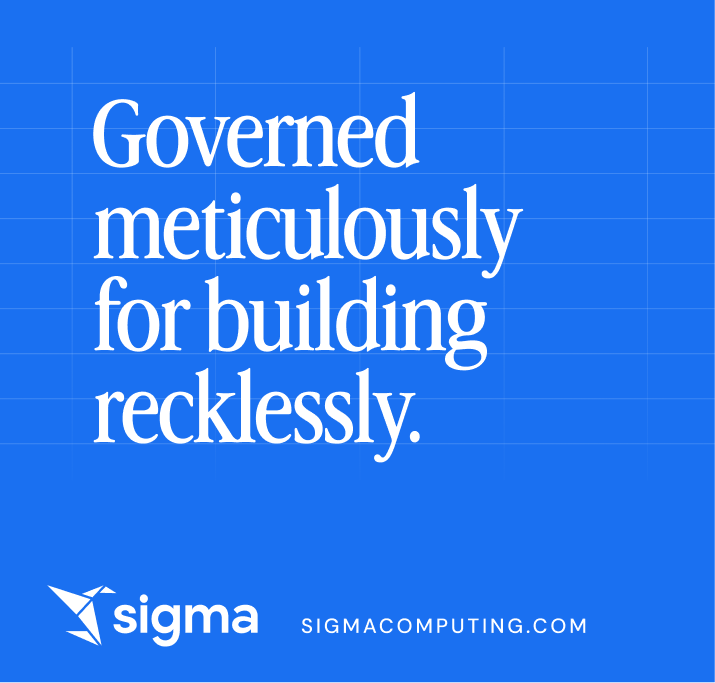
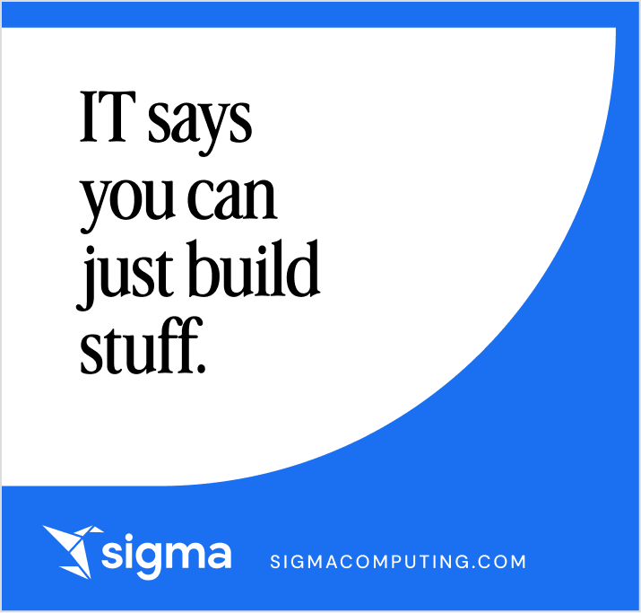
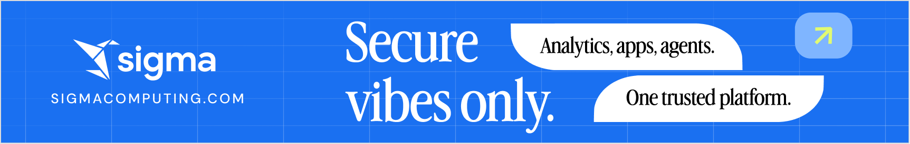
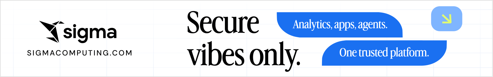
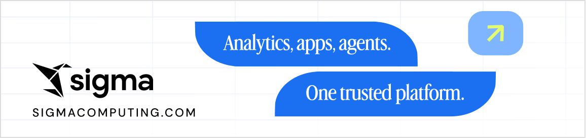
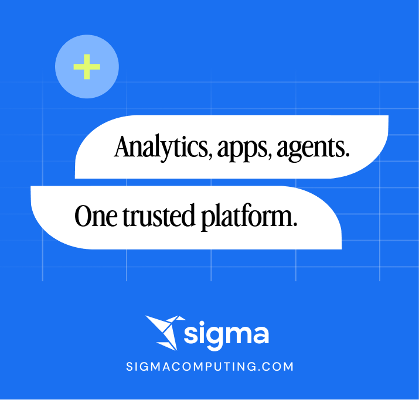

SKONA subway ads, every line in every size
34 lines, 114 ads: SKONA's round-three lines and our new ones, each as an 11″ × 70″, an 11″ × 46″ and a square. Where SKONA made a size, theirs is shown; the rest are set by us in Advercase (the font SKONA uses) on their layouts, marked “Set by us.” Everything you keep collects in the box at the top; your picks start checked. Check Keep on the ones you want: the list saves in this browser, Copy list and Save list (.csv) export it, and each ad downloads as SVG, a 4x PNG or a CMYK print PDF (or all kept ads at once as a zip, and Export CMYK zips the print PDFs).
Print view
Every ad below is soft-proofed: converted to CMYK and back, so you see roughly how it prints on a GRACoL 2013 coated press.Guides on every ad follow OUTFRONT’s NYC Brand Train spec: the shaded edge is hidden by the car frame, the pink line is the live (visible) area, and the blue dashed line is the safety area that type, logos and QR codes stay inside. Left half of each chip is the screen colour, right half the print simulation. Brand colours use SKONA’s builds from their approved files: Sigma blue C90 M60 Y0 K0, bric C44 M20 Y0 K0, lime C15 M0 Y69 K0, and rich black C60 M40 Y40 K100 for type and the logo. #1A70F1 itself sits outside what CMYK inks reach, so print reads deeper and less electric than the screen. Everything else converts through GRACoL 2013 (CRPC6), the US coated-press reference, and greys print in black ink only. The print files are vector PDF/X-4s on the same builds, layered like SKONA’s (bg, artwork, copy, guides) and named their way; if the printer sends their own profile, they rebuild against it.
Your keeps
Every ad you keep shows here; tick or untick Keep on any ad to add or remove it. Your picks start ticked.11″ × 70″
Nothing kept in this size yet.
11″ × 46″
Nothing kept in this size yet.
Squares
Nothing kept in this size yet.
New lines
Vibe-coded apps, production ready.
Governance


The fastest way to build. The safest place to run it.
Governance


Easy to build. Easier to approve.
IT Approval


Everyone builds. IT manages everything.
IT Approval


Every team builds. Every app is secure.
Governance


Build freely. IT has the keys.
IT Approval


From your warehouse to app.
App Creation


Finance builds. Ops builds. IT approves.
IT Approval


Sigma for analyzing, building, and automating. You for solving harder problems.
Meaningful work


Sales builds. Marketing builds. IT approves.
IT Approval
Build secure, governed business applications.
Governance


IT wants you to build it.
IT Approval


Ambitious teams. Meticulous governance.
Governance


Meticulous governance for ambitious teams.
Governance


Data to app in minutes. IT-backed from day one.
IT Approval
SKONA's round-three lines
Finally, time for the work you love.
Meaningful work


Put your data to work.
Efficiency


Take on the big ideas. Sigma does the rest.
Meaningful work


Governed meticulously for building ambitiously.
Governance


Make the hard things easy and the impossible things possible.
Meaningful work


Go build it. IT approves.
IT Approval


More time solving. IT already said yes.
Meaningful work


Build what you need. IT’s already on board.
IT Approval


Build what you need. IT’s on board.
IT Approval


Start with a spreadsheet. End with an app.
App Creation


Go solve the ambitious stuff. IT’s got the rest.
Meaningful work


Your best spreadsheet wants to be an app.
App Creation


IT handled the setup. Go do your best work.
IT Approval


From SKONA's zips (round one, Oct 14, and the Oct 21 file)
Govern the data, not the builders.
Governance


Governed meticulously for building recklessly.
Governance


IT says you can just build stuff.
IT Approval


The path to ROI is paved with governance.
Governance

Secure vibes only.
Governance


Analytics, apps, agents. One trusted platform.
Brand





